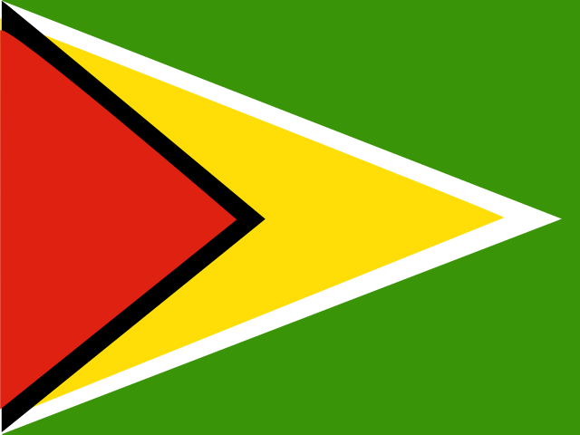

ガイアナ
Guyana / 南アメリカ
No.71
📍 位置
南アメリカ北東部、大西洋に面する国。国土の大部分を熱帯雨林が占める。
🏙 首都
ジョージタウン
👥 人口
約80万人
🏛 政治体制
共和制
💰 通貨
ガイアナ・ドル(GYD)
🏗 建国年
1966年
📖 成り立ち
ガイアナはオランダ、その後イギリスの植民地（英領ギアナ）であったが、1966年5月26日にイギリスから独立し、1970年に共和制へ移行した。
🗣 言語
- 英語
🎎 民族
- インド系
- アフリカ系
- 混血
- 先住民
🍜 有名な食べ物
ペッパーポット(シチュー)、カリー料理
🏔 自然・地形
熱帯雨林、カイエトゥール滝、大西洋沿岸の湿地
💡 トリビア
落差約226mを誇るカイエトゥール滝は、世界最大級の一段滝として知られる。
📜 ことわざ・名言
「一人では、荷物は運べない」— 協力の大切さを表す言葉。
🇯🇵 日本とのつながり
日本は漁業や環境分野などで協力関係を築いている。
🗺 観光名所
- カイエトゥール滝
- ジョージタウンの木造建築
- 熱帯雨林保護区
🎬 関連動画
準備中です。